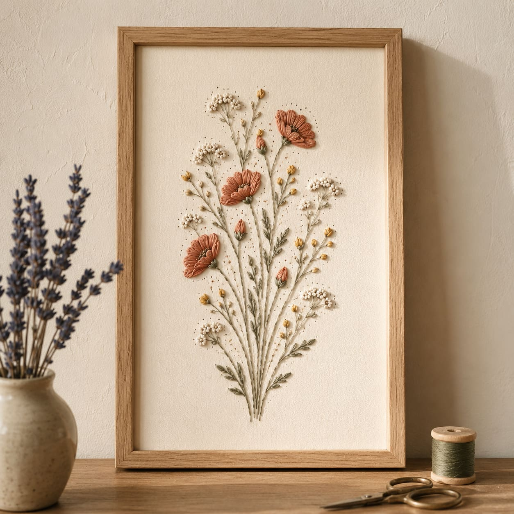
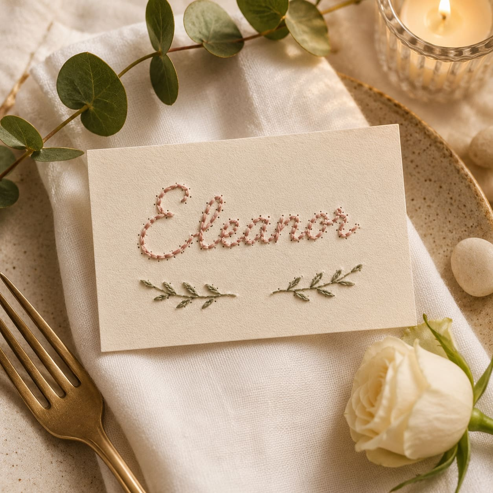
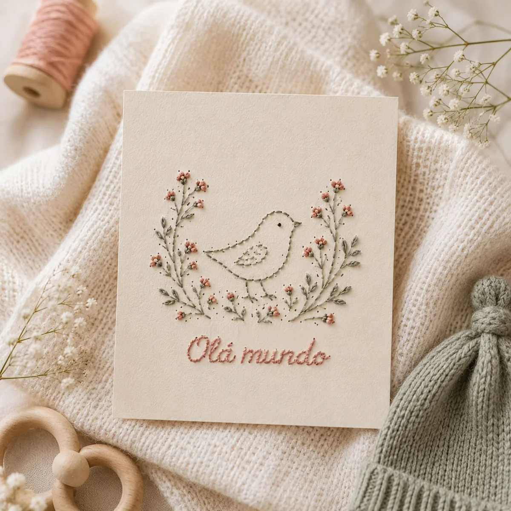
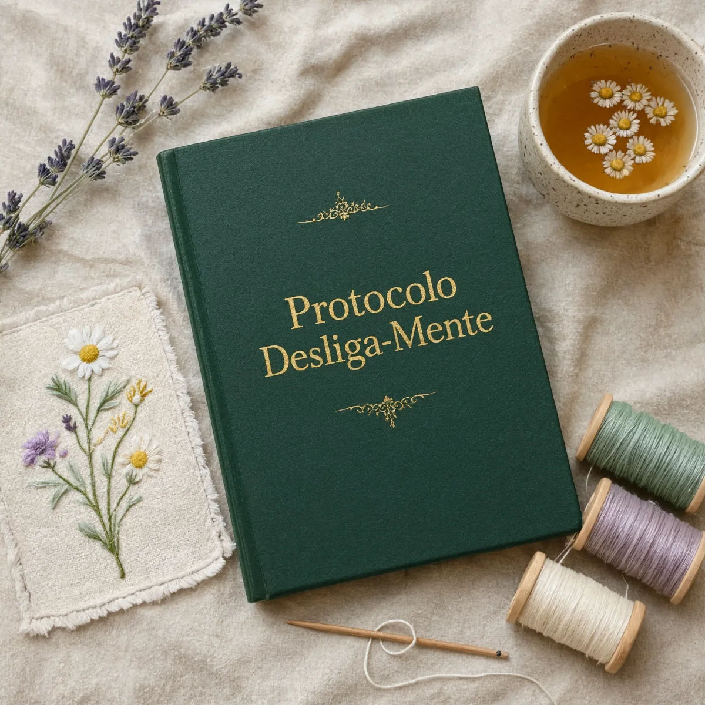
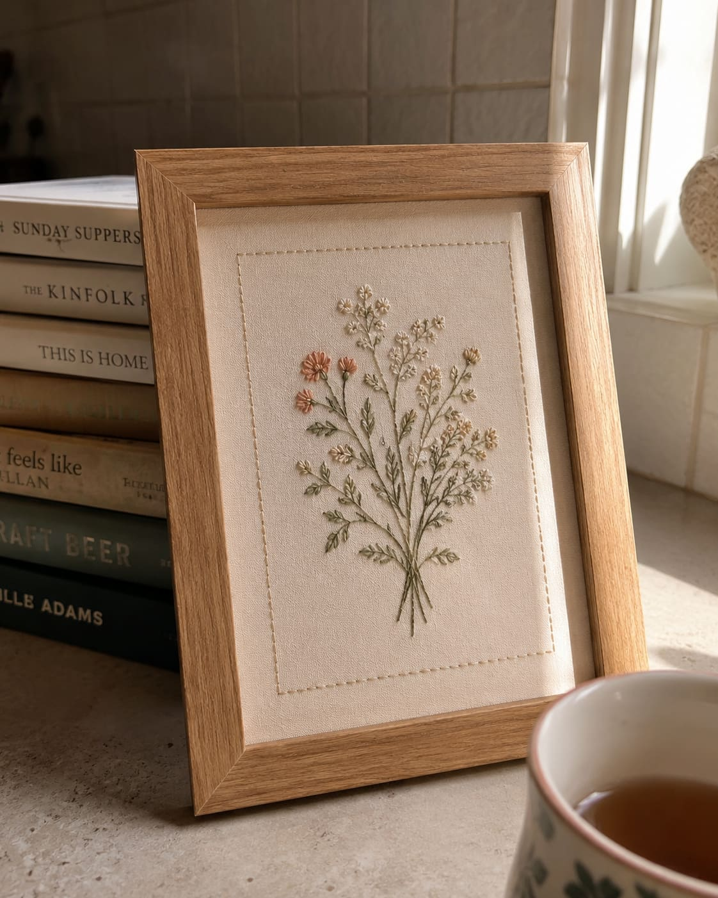
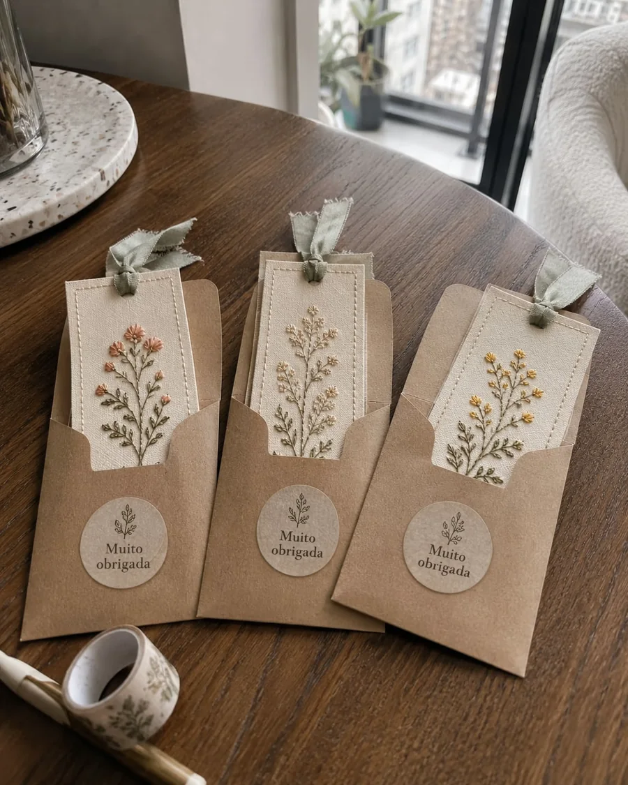
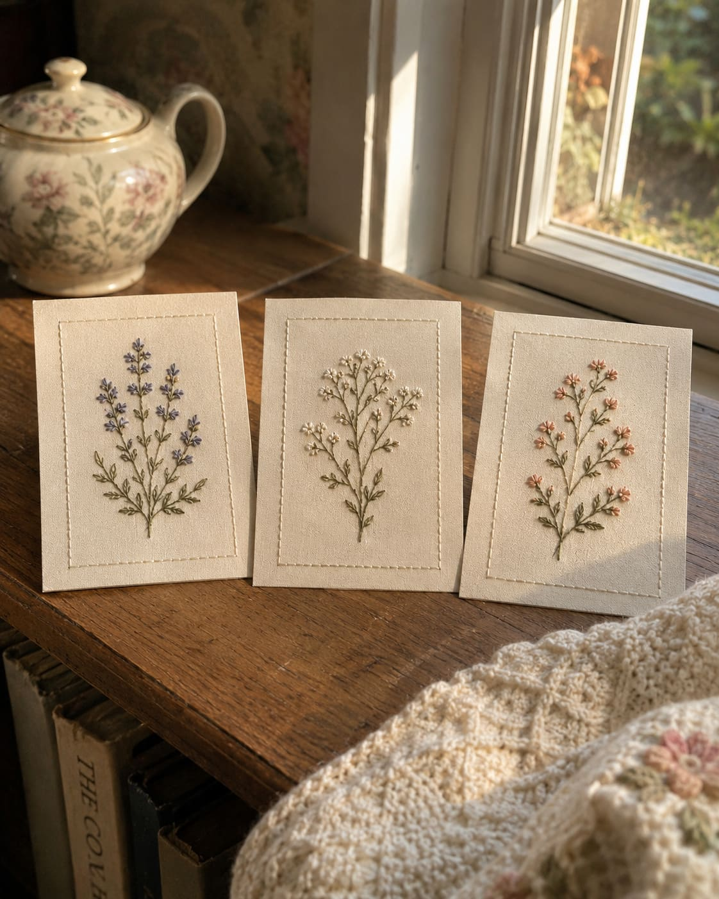

i.
Zero Carga Mental
Os moldes já vêm marcados e prontos. Você não precisa pensar, medir ou ter talento artístico. Basta seguir o caminho, permitindo que seu cérebro finalmente "desligue" enquanto as mãos trabalham sozinhas.
Isso NÃO é tentar meditar à força, nem tomar chás caros, nem rolar o feed do celular até a exaustão. É completamente diferente de tudo o que você já tentou para silenciar a cabeça à noite.
Você deita querendo apenas descansar a mente. Acaba rolando o feed do celular por horas e termina a noite se sentindo ainda mais exausta e pilhada.
Tentar ler um livro ou focar em um filme, mas abandonar em 5 minutos porque sua cabeça não consegue parar de pensar nos problemas e boletos de amanhã.
Jantar, TV, celular, cama. O seu corpo apaga de cansaço extremo, mas o sono é leve, picotado, e não repara mais as suas energias.
A necessidade urgente de ter um momento isolado, longe de telas, demandas, filhos e notificações, para fazer algo que seja puramente para você.
É exatamente aqui que o "Truque das Mãos" quebra o ciclo.
Não é coincidência que mais de 2.800 mulheres adotaram essa rotina noturna. O movimento guiado entrega exatamente as quatro coisas que o seu sistema nervoso esgotado está implorando para ter:
Os moldes já vêm marcados e prontos. Você não precisa pensar, medir ou ter talento artístico. Basta seguir o caminho, permitindo que seu cérebro finalmente "desligue" enquanto as mãos trabalham sozinhas.
Em apenas 15 minutos, a repetição física do fio desacelera sua respiração e estabiliza os batimentos. Na segunda semana, você vai desejar pegar a agulha em vez de pegar o celular.
É uma ruptura física do vício em rolagem infinita. O foco pontual resgata a sua concentração perdida e preenche o vazio angustiante que os vídeos curtos deixam no fim do dia.
Em vez de deitar sentindo que "só apagou incêndios e cuidou dos outros o dia todo", você cria algo lindo e real. É a recompensa visual imediata que devolve a sua sensação de capacidade e calma antes de dormir.
Esqueça a pressão de ter que ser "criativa" ou habilidosa. Se você consegue segurar uma caneta, consegue aplicar o "Truque das Mãos". Nós removemos toda a parte difícil e frustrante do artesanato tradicional. Este sistema foi desenhado para entregar paz imediata a quem está com a mente no limite, sem que você precise aprender técnicas complexas e bem longe de qualquer tela brilhante.
O rolar infinito do celular na cama só alimenta o seu esgotamento invisível. Você precisa desesperadamente de um refúgio para as mãos que não seja lavar louça, dobrar roupas ou resolver problemas da casa. O "Truque das Mãos" devolve o seu silêncio em 15 minutos. Sem telas brilhantes, sem notificações e sem algoritmos sugando sua energia.

Baixe seu acesso instantaneamente. Escolha o molde que mais combina com o seu dia e imprima em qualquer impressora doméstica comum. Sem depender de frete ou de entregas demoradas.
Apenas siga o caminho já desenhado. Em poucos minutos, suas mãos assumem o ritmo, o estresse derrete e sua respiração acalma. Tudo usando apenas uma agulha e linhas baratas que você encontra em qualquer armarinho.
Sinta a paz e o orgulho absurdo de ver algo lindo nascer das suas mãos. Emoldure, presenteie quem você ama, ou simplesmente use a peça concluída como o seu troféu de que hoje você cuidou de si mesma.
Seu acesso inclui 200 moldes terapêuticos organizados para a sua rotina. Se você teve um dia caótico e só tem 15 minutos, ou se precisa de uma imersão profunda para esquecer os problemas no fim de semana, existe um guia perfeito para o seu nível de estresse hoje. Apenas escolha, imprima e deixe a agulha calar os seus pensamentos.






Um pacote de ferramentas bônus desenhado para blindar a sua rotina contra o estresse e maximizar o seu relaxamento. Disponível sem custo adicional apenas para quem iniciar o ritual hoje.

O roteiro exato para preparar o seu ambiente em 3 minutos e blindar seus momentos de paz contra interrupções. Descubra os ritmos de respiração para alinhar com o "Truque das Mãos", garantindo que você nunca mais deite na cama com a cabeça a mil por hora.
O maior inimigo de um novo hábito é a preguiça e o medo de gastar muito. Nós resolvemos isso. Esqueça bater perna na rua: receba nossa lista secreta de fornecedores para comprar linhas e papéis por centavos, entregues na sua porta. Inclui também o "Caderno do Esvaziamento", um guia prático para você despejar suas preocupações e pendências no papel ANTES de pegar na agulha, garantindo um foco profundo e 100% relaxante.
O ambiente ao seu redor dita o nível do seu estresse. Descubra a fórmula de 2 minutos para ajustar a iluminação, os sons e a mesa da sua casa, sinalizando fisicamente para o seu cérebro que o "modo sobrevivência" do dia acabou. Transforme qualquer canto da sua sala em um refúgio impenetrável contra notificações, algoritmos e cobranças.
Pagamento Único.
(Acesso Completo ao Ateliê de Papel)
Mensagens reais de mulheres que usaram o "Truque das Mãos" para desativar o modo sobrevivência, desacelerar o cérebro e resgatar suas noites de sono limpo este mês.
Oi! Eu precisava contar: minha primeira peça ficou pronta 😍 Bordei o molde de flores silvestres.
10:14Passei 2 horas nele e, pela primeira vez em meses, não toquei no celular e nem pensei nos problemas do trabalho 🤯
10:15
Ficou lindo!! 😍 Vai colocar na parede?
10:22 ✓✓Já emoldurei! Vai ficar no meu quarto 🖼️ É o meu troféu oficial de paz mental.
10:23Sério, eu achei que não ia ter paciência. Meu cérebro não parava um segundo. 🌪️
14:05Fiz aqueles marcadores rápidos que você sugeriu no guia para começar.
14:06
Que incrível!! O Truque das Mãos funcionou rápido com você? 💚
14:15 ✓✓Menina, foram 15 minutos e minha respiração já mudou. Foi o primeiro final de semana que eu realmente consegui relaxar a cabeça e dormir a noite toda 😭
14:16Comecei a bordar há três semanas. Eu estava numa crise de exaustão terrível e não conseguia desligar a mente à noite 🥺
11:32Fiz uma peça para cada neto esta semana 💕
11:33
Ficaram lindos 🥰 E como você está se sentindo?
11:45 ✓✓O ritual de atenção plena antes de dormir salvou as minhas noites. Sinceramente, foi o melhor investimento que já fiz na minha saúde mental em anos ✨
11:46Experimente o ritual completo hoje mesmo. Imprima alguns moldes, faça seus primeiros pontos e sinta a sua mente silenciar hoje à noite. Se por qualquer motivo você sentir que este hábito não trouxe o alívio que a sua rotina precisa, basta nos enviar um único e-mail em até 7 dias. Devolvemos 100% do seu dinheiro imediatamente. E para mostrar o quanto confiamos na sua transformação: você pode continuar com todos os 200 moldes que já baixou. Nós seguimos em paz, e você com a mente leve.
A janela promocional com os 3 Bônus de Emergência acompanha o contador desta página. Depois que o prazo de hoje terminar, o pacote volta ao seu valor normal de R$ 297. Mas o verdadeiro custo de ignorar isso não é financeiro: é passar mais uma noite com a cabeça a mil por hora, exausta, repetindo o mesmo ciclo de amanhã. A escolha entre o caos e o silêncio está nas suas mãos.
Quero Desligar Minha Ansiedade Hoje (Acesso Imediato + Bônus) →